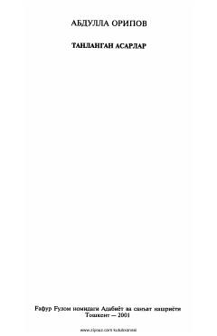

TAO'zbekiston xalq shoiri Abdulla Oripovning sara she'r va dostonlari jamlangan to'plam.
O'zbekiston xalq shoiri Abdulla Oripovning ushbu to'plami to'rt jildlik tanlangan asarlarining ikkinchi jildi hisoblanadi. Kitobdan shoirning turli yillarda yozilgan sara she'rlari va dostonlari o'rin olgan.